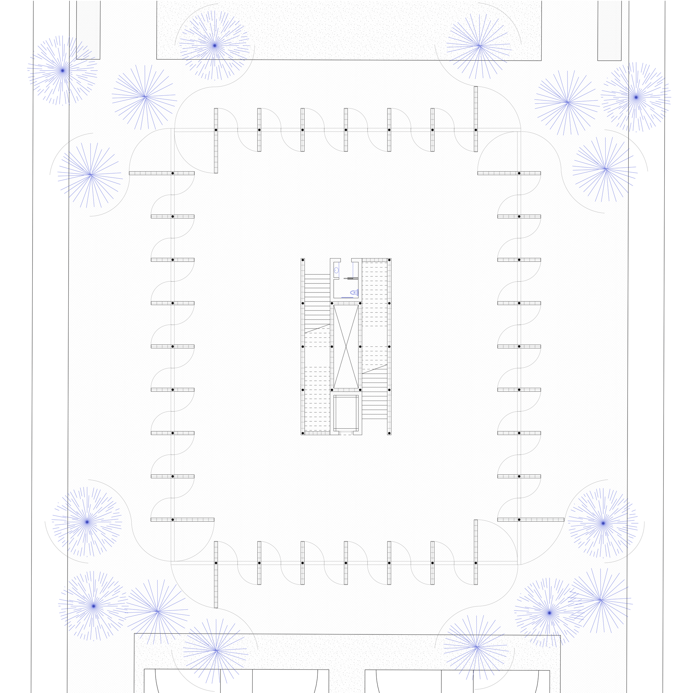
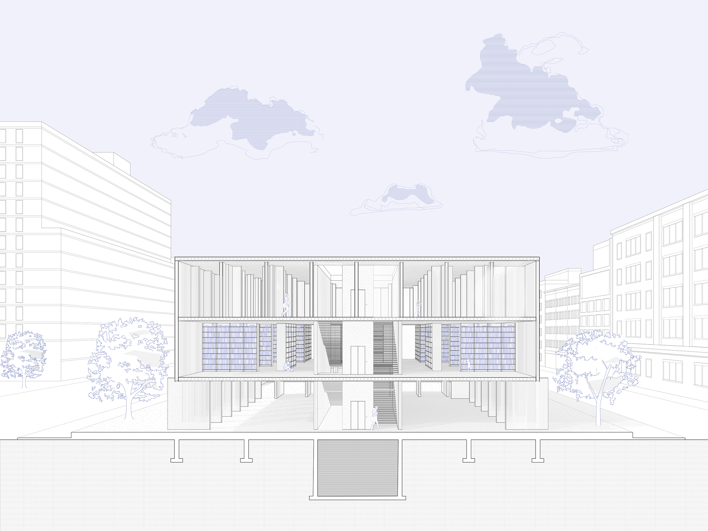

A library for Chinatown
Completed under Emmett Zeifman (Medium Office) at Columbia GSAPP for Core II: The Library as Third Space. Teaching Assistant: Kevin Hai

Drawing upon earlier material studies of variety within a constrained material assembly and grid (see them here), I wanted to create a library that could provide three different spatial experiences within the stack that operated on the same grid.
The different floor plans allow for different states (in transit, temporary, stationary) and different scales (large-scale, small-scale, individual) of occupancy. Steel columns at the perimeter support bubble concrete slabs and interior stud walls are encased in polycarbonate.

The project's circulation is also encased in polycarbonate and open to the sky, acting as a well of light that is visible throughout the entire building.
The library's ground floor is composed of polycarbonate steel-framed doors that are able to be manipulated by anyone, allowing the library to effectively act as an extension of the park. When all the doors are open, the ground plane of the park flows through the ground floor of the building.